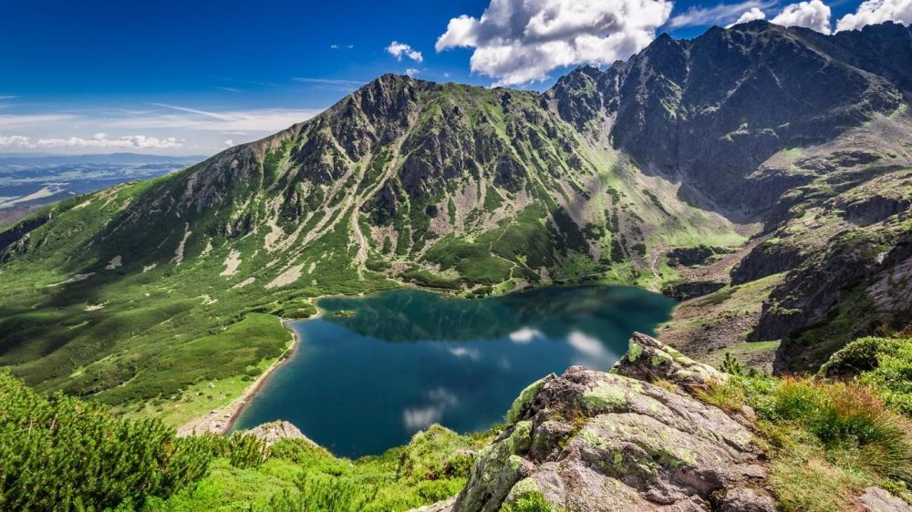

Descoperă Zakopane - Poarta către Munții Tatra din Polonia
Zakopane este un oraș montan pitoresc din Polonia, cunoscut pentru frumusețea sa naturală și activitățile montane:
-

Munții Tatra
Zakopane este poarta către aceste munți spectaculoși, perfect pentru alpinism, drumeții și schi.
-

Strada Krupówki
Strada principală a orașului, plină de magazine, restaurante tradiționale și atmosferă vibrantă.
-

Muntele Gubałówka
O telecabină te duce în vârf, de unde poți admira priveliști panoramice uluitoare asupra orașului și munților.
-

Biserici de lemn
Zakopane este renumit pentru bisericile sale de lemn cu arhitectură tradițională.
-

Băi termale
După o zi de activități, poți relaxa în băile termale pentru a te răsfăța.
Concluzii
Zakopane oferă o experiență montană autentică, combinând natura frumoasă cu tradițiile locale.